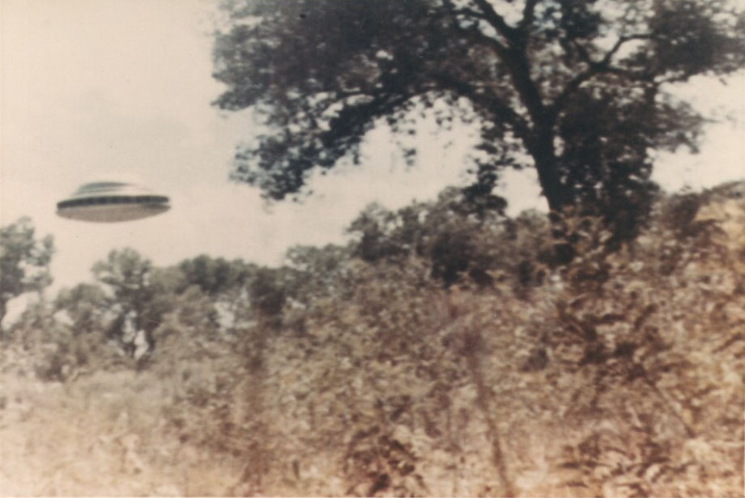
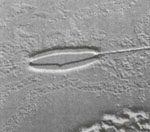

Villa naît . Inspecteur des ponts et chaussées, il se fait appeler "Paul".
À partir de 5 ans, il aurait été contacté télépathiquement par des
visiteurs. Entre , il voit 5 ovnis sans pouvoir les photographier et parle à un de ses
occupants.
Premier contact
Villa travaille pour le Département de l'Eau et de l'Energie à Los Angeles (Californie).
Un jour alors qu'il travaille sur Long Beach, il est poussé par une envie irrésistible d'aller sur la plage, qu'il
ne comprend pas lui-même. Là il rencontre un homme d'environ 7pieds de haut. Villa, pris de peur, pense tout d'abord à s'enfuir, mais l'homme l'appelle par son nom, et lui dit
de nombreuses choses personnelles à son sujet. Villa est alors convaincu de communiquer avec une intelligence
supérieure, et que cet homme vient de l'espace :
Il savait tout ce que j'avais dans mon esprit et me raconta de nombreuses choses qui étaient arrivées dans ma
vie.
Il me dit alors de regarder derrière le récif. Je vis un objet en forme de disque d'aspect métallique qui
semblait flotter sur l'eau. L'homme de l'espace me demanda ensuite si je voulais monter à bord et regarder
alentour, et j'allai avec lui.
Photographie de Villa

Il dit que les occupants des soucoupes
sont tous d'apparence humanoïde, bien que généralement plus beaux que les terriens, car ayant un visage et un corps
plus rafiné. Ils disposent également d'une connaissance scientifique avancée, comme le démontre leur appareil et
leur dialogue avec Villa. Ils disent à Villa que la galaxie à laquelle appartient la Terre est un grain de sable sur
une plage immense, par rapport à l'incommensurable nombre de galaxies habitées dans l'univers. Grâce à leur
technologie avancée, leur vaisseau spatial peut pénétrer le système de détection radar de la Terre, de sorte qu'ils sont détectés sur les écrans radar seulement
lorsqu'ils veulent attirer l'attention sur leur présence dans nos cieux. Il semble que leur appareil soit
constamment en activité à la surface de notre planète, et qu'ils prévoient plus d'atterrissages et d'observations
afin d'augmenter la connaissance du public de leur existence. Ils déclarent être ici en mission pacifique pour aider
notre peuple, qu'ils ont des bases sur la Lune, que Phobos, un des 2 satellites de Mars, est creux et de fabrication artificielle, et
qu'il existe une intelligence supérieure qui gouverne l'univers et tout ce qu'il contient.
Premières photos
Photographie de Villa le 16 juin 1963
Un jour ses contacts spatiaux lui demandent télépathiquement de venir seul avec sa camionnette sur un lieu de
rencontre. Le , Villa se retrouve donc près d'un lit de rivière asséché au Sud
d'Albuquerque, près de la ville de Peralta (Nouveau-Mexique).
Villa a prévu de prendre des clichés et apporté son appareil photo japonais Rokuoh-Sha avec une lentille de 75 mm
focale de 4,6, chargé avec un film Kodak 120. Alors qu'il fait une 1ʳᵉ photo d'essai sur sa camionnette, il voit
arriver un appareil circulaire argenté d'environ 70pieds de diamètre.
A ce moment, 9 êtres à l'apparence humaine (4 hommes et 5 femmes) sortent alors du vaisseau par une porte fermée
hermétiquement. Ils mesurent entre 7pieds et 9pieds, et sont bien proportionnés. Certains sont blonds, d'autres roux (comme du cuivre poli), et d'autres bruns.
Ils parlent à Villa en anglais et en espagnol et peuvent communiquer télépathiquement. Les visiteurs disent à Villa
qu'ils viennent de la galaxie Coma Berenices, à de nombreuses années-lumières de là. Ils indiquent disposer de 9
autres disques contrôlés à distance et beaucoup plus petits (14pouces de diamètre) capables de capter des images et des sons de n'importe où et retransmettre les données à leur
vaisseau instantanément. Ils permettent à Villa de prendre des photos de leur appareil.
Photographie de Paul Villa le 16 juin 1963
Après une longue conversation, le vaisseau décolle. Villa leur demande de ne pas blesser les petites créatures sur
le sol en dessous, ce à quoi ils font attention.
Villa les photographie avec son appareil. Il produira 7 images de bonne qualité :
2 montrant l'appareil en position verticale, pour montrer que le peuple de l'espace a créé une gravité artificielle, et est donc complètement à
l'aise quelle que soit la position du vaisseau ;
4 autres ;
une 7ᵉ photo où l'on voit des ouvertures dans l'appareil, qui ne sont pas des fenêtres, mais sont directement
impliquées dans la propulsion de l'appareil. Villa déclare que les occupants lui ont dit que ces ouvertures ne
sont ouvertes que dans l'atmosphère des planètes - jamais dans l'espace.
Faux ?
Le traitement de cliché de William H. Spaulding

Cependant aucune ne sera réellement authentifiée par l'équipe du projet Blue Book VSD 2007 H. De son côté Spaulding indiquera que ces photos sont fausses, avec à l'appui le
traitement d'un cliché montrant la présence d'un fil. L'objet ne serait alors qu'une maquette de 50 cm de diamètre
et de 20 cm de haut.
2ᵉ contact
Photographie prétendumment prise à près de Bernacillo (Nouveau-Mexique)
(Pâques), Villa est à nouveau "guidé télépatiquement" en un point près de près de Bernacillo (Nouveau-Mexique), proche de l'endroit d'où il aperçoit un appareil stationner
dans l'air silencieusement et le photographie (ci-contre). L'appareil projette un rayon qui embrase une petite
broussaille. La fumée de la broussaille est visible (plus clairement en couleur) dans les arbres juste en dessous de
l'appareil, et juste au-dessus de la gauche de la porte de la camionnette de Villa. Dans une photo, ils brûlent le
sommeil d'un arbre - en utilisant un rayon dirigé par le vaisseau. Ces choses sont faites pour démontrer leurs
capacités. L'appareil atterri et Villa évalue son diamètre à 300pieds. Il dispose d'un tripode d'atterrissage télescopique sous l'appareil. Les 3 hommes d'équipages ont les
cheveux clairs et la peau hâlée.
Photographie prétendumment prise près de Albuquerque
(Nouveau-Mexique)
Villa discute avec eux durant presque de sujets personnels, mais aussi généraux. Ils lui parlent
des astronautes, Edward White et James MacDivitt, sur leur
vol GT-4, qui virent réellement un vaisseau lorsqu'ils rapportèrent l'observation d'un objet comme Pégase. Ils
disent aussi que le gouvernement ne diffusera pas les photos de Mariner 4 parce qu'elles montrent des stations de
pompage pour les canaux de Mars. Ils ajoutent que vers
, 17 nations disposeront de la bombe atomique. Villa indique qu'ils parlent en anglais, mais aussi
en espagnol (sa langue natale). Sur leurs conseils, Villa arrête de fumer afin d'augmenter ses capacités à recevoir
des communications télépathiques.
Villa meurt . Il est enterré au Cimetière National de Santa Fe (Nouveau-Mexique).